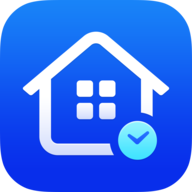

HousekeptPrivacy Policy
Effective October 11, 2026
This policy covers the Housekept app for iPhone, made by Olympic Digital Solutions (“we”).
What stays on your device
Everything you enter in Housekept is stored in the app's private storage on your iPhone:
- Your maintenance tasks, schedules, notes and the history of when each job was done
- Your answers to the home setup questions (home type, equipment, climate and hemisphere)
- Appliance records: names, locations, brands, model and serial numbers, purchase dates, prices, warranty dates and notes
- Photos you take or choose for an appliance
We have no servers that receive this information and no way to see it. If you delete the app, this data is deleted with it. Like other apps, Housekept's data may be included in your iPhone's own iCloud or computer backup, depending on your device settings. Apple handles those backups.
Permissions
- Notifications: to remind you when tasks are due. Reminders are scheduled on your iPhone; nothing is sent to us.
- Camera: to photograph appliance labels, receipts and manuals.
- Photos: to choose existing pictures for an appliance. Housekept saves its own copy and doesn't read the rest of your library.
Each permission is optional, and you can change it at any time in your iPhone's Settings.
Information that leaves your device
Housekept Pro purchases
Purchases are made through your Apple ID. Apple processes the payment, and we never see your name, email address or payment details. Apple's handling is covered by Apple's Privacy Policy.
To check whether Housekept Pro is active and to restore purchases, the app uses RevenueCat, a subscription service. RevenueCat receives a random identifier created for your copy of the app (not linked to your name or Apple ID), your purchase and subscription history from Apple, and basic technical details such as the app version, iOS version, country and the IP address of the request. We use this only to provide Housekept Pro. RevenueCat's handling is covered by the RevenueCat Privacy Policy.
Backups you export
When you export a backup from Settings, Housekept creates a file containing your tasks, history, appliance records and photos, and opens the share sheet. The file goes only where you choose to save or send it, such as iCloud Drive, Files or AirDrop. It isn't sent to us.
What we don't do
- We don't sell, rent or share personal information.
- We don't use advertising, analytics or tracking services.
- We don't require an account or sign-in.
Children
Housekept is suitable for all ages. It is not directed at children under 13, and we don't knowingly collect information from them.
Your choices
You can edit or delete anything in Housekept at any time, and deleting the app removes all of its data from your iPhone. For questions about purchase records held by RevenueCat, contact us and we'll help.
Changes to this policy
If this policy changes, the new version will be posted on this page with a new effective date. Any change that affects how your data is handled will also be described in the app's update notes.
Contact
Questions about privacy: support@olympicdigitalsolutions.com